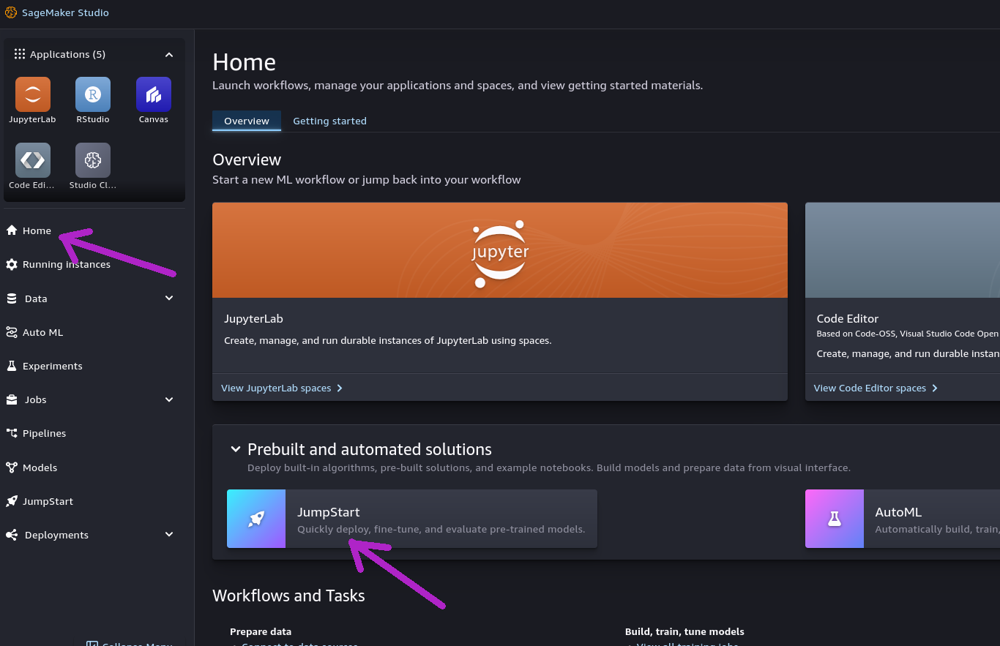
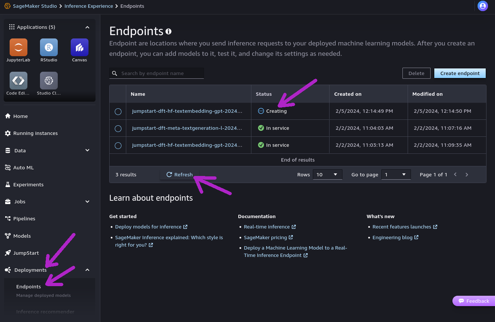
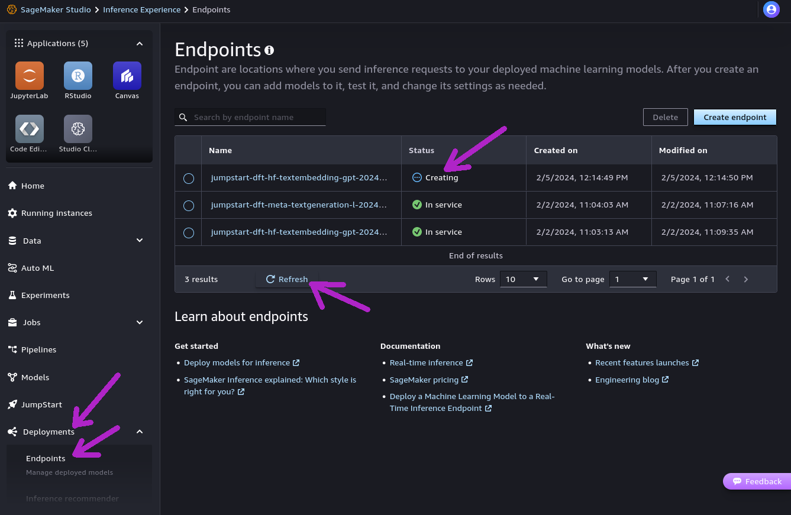
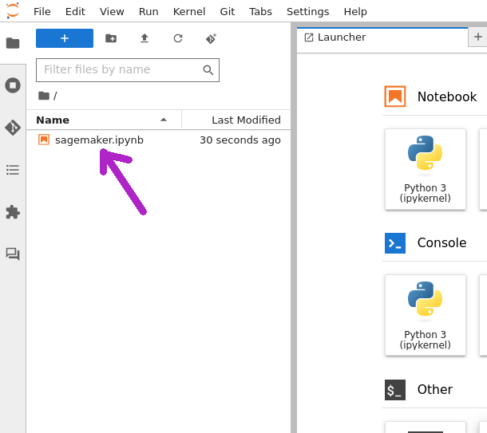

Amazon SageMaker¶

Overview¶
Amazon SageMaker is a managed service to deploy and use Machine Learning models for a variety of purposes. Its offering includes infrastructure provisioning, tooling and end-to-end workflow setup.
With Amazon SageMaker it is possible not only to deploy ready-made models, but also to manage training data and perform custom training or fine-tuning steps. The easiest way to begin using SageMaker is to deploy and use many well-established foundation models that are made available through "SageMaker JumpStart".
Models deployed within Amazon SageMaker can be integrated with Astra DB, making it possible to build enterprise-grade Generative AI applications with minimal infrastructural effort, while retaining desirable features such as the usage of secure, dedicated instances.
In the following example, you will provision and execute a simple end-to-end application implementing the RAG (retrieval-augmented generation) flow, with AI models from Amazon SageMaker JumpStart and Astra DB as the backend for the Vector Store.
The example makes use of the LangChain framework (which has great support for both SageMaker and Astra DB); however, other, lower-level ways to interact programmatically with SageMaker are available -- as a matter of fact you will get a chance to experiment with them in an Appendix at the end of the integration example.
For more information and other options to interface with SageMaker, please consult the suggested readings at the end of this page.
Prerequisites¶
To run the integration demo notebook, you need:
- An Amazon account with access to Amazon SageMaker. In particular, you will need to acces SageMaker Studio and run the example in there: besides ensuring a standardized runtime and environment, SageMaker Studio provides automated access to a ready-made set of Amazon IAM roles that grant your account all necessary permissions to deploy the "JumpStart" models in SageMaker (see below for details);
- An Astra account with a Serverless Cassandra with Vector Search database. You will need the Database ID and an Access Token with role "Database Administrator".
Setup¶
The sample application needs an embedding model and a large language model (LLM), both in SageMaker.
The models can be deployed either through the SageMaker UI or programmatically with the Python SageMaker SDK. You can choose your preferred method: the integration example will adapt to your choice.
Deploy models programmatically¶
The code for automated deployment of the models is included in the example: you can skip to "Run the example" below and start with the code.
Deploy models from SageMaker UI¶
If you prefer to use the SageMaker UI to deploy the models, here are all steps.
Choice of the models
This example is tailored to run using exactly the models we suggest in the following.
Please pay attention to deploying the right models for a smooth quickstart experience. Changes could impact the performance or the results or even not work altogether, since the signature of the inputs and outputs varies between models.
On the other hand, the reason why this method is described in some details is precisely because it is what you may need when using your own models -- possibly created, trained or fine-tuned outside of the JumpStart experience.
If you plan on using other models, remember that you will have to adapt parts of the code (such as the signature of the input parameters, the serializers/deserializers and the "context handlers" passed to the LangChain SageMaker objects) your model's specific needs.
Step 1. Open your Amazon SageMaker console and click the "Studio" item in the left navbar. Do not choose "Studio Lab", which is a different thing.

Step 2. Click the "Open Studio" button after choosing a user profile: this will bring you to the Studio interface. You may need to create a Studio instance ("SageMaker domain") if you don't have one already. Creation of a new domain may take about five minutes.

Step 3. Click the "Home" icon on the left toolbox of Studio and scroll to the "JumpStart / Models, notebooks, solution" entry. Clicking on it will open the "SageMaker JumpStart" tab in the main view. (Note: we will mostly refer to "tabs within the Studio UI" simply as "tabs" in the following. These, however, are not meant to be separate tabs in your browser.)

Step 4. Search for the embedding model GPT-J 6B Embedding with the search box of the JumpStart tab. Click on it in the search results: a tab will open with this model's details. Make sure you are on the "Deploy" tab and expand the "Deployment Configuration" section.
Step 5. Give the endpoint a specific name (it must be unique) and select ml.g5.24xlarge as the instance type that will host the model. (Note: you might need
to check with your Service Quotas to make sure you have capacity to deploy this instance.)
Step 6. Click "Deploy" to start the process. This might take between five and ten minutes, during which a newly-opened tab will report progress. As you can see on this tab, the endpoint you are going to use has been given a final name made by prepending "jumpstart-dft-" to the endpoint name you chose earlier. Keep this endpoint name handy: you will be asked to provide it later when running the example code.

Step 7. While you wait, you can check the status of the deploy in two ways: (a) from the Amazon SageMaker UI, choosing the "Inference / Endpoints" entry in the left navbar, and then refreshing periodically; or (b) from within SageMaker Studio, by selecting the "Home" icon and then choosing "Deployments / Endpoints" in the left-hand toolbox.
Checking deploy status, screenshots
From the SageMaker UI:
 From within SageMaker Studio:

From within SageMaker Studio:


Step 8. When the deploy has finished, you will see its status being reported as "In Service". You can run a quick test with a handy Playground-like interface available in SageMaker Studio: click on the endpoint name in the endpoint list, then select the "Test inference" tab to open it. Try with a JSON payload such as {"text_inputs": ["I am here!", "So do I."]} and hit "Send Request" (bottom right): the endpoint response should resemble the one shown in the screenshot, with the two embedding vectors under the body => embedding list-of-lists entry. The embedding model is deployed and ready to be used in the example code.
Step 9. Repeat steps 4 through 7, this time to deploy the LLM: search in JumpStart for the model named "Llama 2 70B Chat" and choose ml.g5.48xlarge as instance type. (Note: this model, made available by Meta, requires acceptance of its "End User License Agreement" and "Acceptable Use Policy" prior to use: you will be presented with a dialog to do so at deploy time. Also, keep in mind that the deploy time for this model can well exceed twenty minutes in some cases.)
Step 10. Similarly as for the embedding model, you can test the LLM in the UI through the model's "Test inference" tab. Try with a payload like the following: {"inputs": "Write a short poem about the late Paleocene.", "parameters": {"max_new_tokens": 256, "temperature": 0.6, "top_p": 0.9}}. Hit the "Send Request" button (bottom right), then check the results in the right-hand panel. (Note: the "Test inference" tab can also show Python code to use that particular endpoint through boto3 invocations. This may come handy, as in most cases exemplifies more advanced usages such as how to encode a past exchange between system/assistant/user roles in the text generation request.)
This LLM cannot be currently tested in the playground
The custom header required to properly pass the EULA acceptance when issuing
invocations from the playground in SageMaker Studio is not working in the playground.
Without this header, invocations would return with this error:
Need to pass custom_attributes='accept_eula=true' as part of header. This means ....
Unfortunately, for the time being, this model can be tested only through the code,
in the ways that will be demonstrated in the example.
Deploys are now complete. You can now start the example notebook as outlined in the next section.
Run the example¶
The integration example is a Python 3.8+ runnable notebook. The notebook is designed to run
within Amazon SageMaker Studio, so as to receive, through its usage of
the AWS boto3 library, an AWS identity equipped with the special permissions required
to programmatically deploy the SageMaker JumpStart models.
Running the app from other environments
Strictly speaking, the permission limitation only apply to the task of deploying the JumpStart models.
That means, if the models are deployed already (e.g. through the UI), the rest of the notebook will still work on other environments such as your local Jupyter, or Google Colab, provided you slightly change the cell that deals with authentication of your AWS client.
Please refer to the notes at the end of this page for more details.
As mentioned earlier, you will be able to either supply the endpoint names for the AI models (in case you went for UI-based deploys as outlined earlier), or have the SageMaker SDK take care of them programmatically.
The main flow of the notebook features usage of the models through the corresponding SageMaker-specific LangChain plugins: however, the model endpoints can be accessed in other ways - something that is demonstrated in an Appendix at the end of the notebook.

Step 1. Download the notebook from this repository at this link and save it to your local computer. (You can also view it on your browser.)

Step 2. You need a "JupyterLab space", i.e. a filesystem with compute resources on top of it, ready to run Jupyter kernels and effectively execute your notebooks. You find JupyterLab in the "Applications" icon group at the top of the left-hand sidebar; then, if you don't have one yet, click the "Create JupyterLab space" button, give it a name, hit "Create" and wait one minute or so. (You can use a ml.t3.medium instance for what comes next.)
Step 3. Once the JupyterLab space is Running, you can click "Open JupyterLab": a new browser tab will be brought up. There is a toolbox on the left, where you are about to upload the notebook you downloaded earlier. (Note: you can stop and re-start the space whenever you want, in order to optimize your resource usage. The notebooks stored in the space's file system will be persisted.)
Step 4. In the left toolbox of your JupyterLab space, make sure you select the "File Browser" view and locate the "Upload" button: use it to upload the notebook file you previously saved. The notebook will be shown in the file browser.

Step 5. If you double-click on it, the notebook will be opened in Studio, with a Jupyter kernel behind id, ready to execute its code.

Step 6. You can now run each cell in sequence by clicking on them and pressing Shift+Enter. You will be asked for the secrets and the connection details during execution.

Cleanup¶
During the above steps, some resources are created, which you may want to cleanly dispose of after you are done:
- endpoints deployed in SageMaker (i.e. the Embedding and the LLM models). You can delete them from the "Endpoints" view, reachable through the "Inference / Endpoints" entry in SageMaker's left-hand navbar (once deleted, you can click the Refresh icon in SageMaker Studio's "Endpoints" tab to make sure they are not listed anymore);
- resources started to run the notebook itself. These can be shut down from within SageMaker Studio: select the "Running Terminals and Kernels" view on the left toolbar (see picture below) and click the "shut down" icon next to all instances, apps and sessions associated to the notebook you just ran;
- you may want to even delete entirely the "SageMaker domain" your created. This requires several steps, outlined here. Do not forget you will have to manually destroy an associated S3 bucket as well;
- a Collection in your Astra DB instance. The notebook provides a way to delete it programmatically.

Additional information¶
Documentation for the Python SageMaker SDK
Using Astra DB for your Generative AI applications
Getting Started with SageMaker JumpStart
Llama 2 foundation models from Meta available in SageMaker JumpStart
Accessing SageMaker from boto3 with Python
Running the app from outside of SageMaker Studio¶
As mentioned earlier, you can still run this app from other environments than SageMaker Studio, provided the models are already deployed, i.e. if you do not need to execute the deployment itself in the code.
To do so, you will have to slightly adjust the cell that handles authentication of your AWS identity (besides of course providing ready-made endpoint names for both embedding and LLM when prompted).
Replace the cell in the notebook that defines variables boto3_sm_client, region_name, sagemaker_session and aws_role with the following, where
the first three lines are needed to enter your AWS access credentials:
from getpass import getpass
# Input your AWS secrets:
AWS_ACCESS_KEY_ID = getpass("Please enter secret 'AWS_ACCESS_KEY_ID':")
AWS_SECRET_ACCESS_KEY = getpass("Please enter secret 'AWS_SECRET_ACCESS_KEY':")
AWS_SESSION_TOKEN = getpass("Please enter secret 'AWS_SESSION_TOKEN':")
# Create the AWS clients with these credentials:
boto_session = boto3.Session(
aws_access_key_id=AWS_ACCESS_KEY_ID,
aws_secret_access_key=AWS_SECRET_ACCESS_KEY,
aws_session_token=AWS_SESSION_TOKEN
)
boto3_sm_client = boto3.client(
'runtime.sagemaker',
aws_access_key_id=AWS_ACCESS_KEY_ID,
aws_secret_access_key=AWS_SECRET_ACCESS_KEY,
aws_session_token=AWS_SESSION_TOKEN
)
region_name = boto3.Session().region_name
sagemaker_session = Session(boto_session=boto_session)
aws_role = sagemaker_session.get_caller_identity_arn()
Now, the rest of the notebook should run just like in SageMaker Studio.